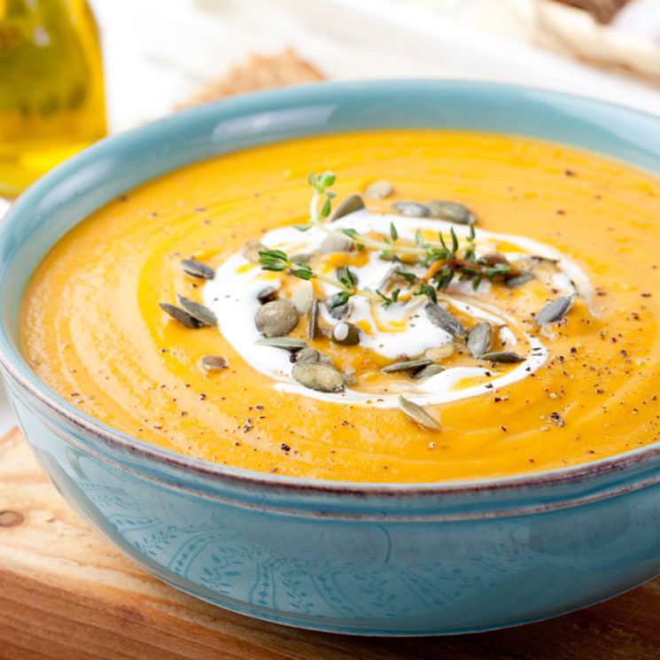
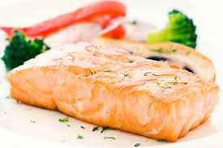

juan francisc, guillermo ortiz 5to bach seccion B!
 Ingredientes: • 1 calabaza • 2 cebollas • 2 dientes de ajo • 1 cucharada de mantequilla • Almendras laminadas para decorar Elaboración: 1. Cortar la calabaza en trozos y salpimentar. 2. Hornear la calabaza a 180º C hasta que esté blanda. 3. Caramelizar las cebollas a fuego lento con la mantequilla. 4. Freir los ajos previamente troceados. 5. Licuar la calabaza con el ajo y la cebolla. Añadir un poco de agua si es necesario, para que quede la consistencia de crema. 6. Decorar con las almendras laminadas.
 Ingredientes: • 500 g. de salmón • 1 limón • 1 cucharadita de eneldo • 1 cucharadita de pimienta • Alcaparras al gusto Elaboración: 1. Engrasar un fuente de horno y colocar el salmón con la piel hacia abajo. 2. Salpimentar y añadir el eneldo y la ralladura del limón. 3. Hornear a 180º C durante 15 minutos. 4. Añadir las alcaparras antes de servir.
Ingredientes: • 3 manzanas • 250 g. de hojaldre • 2 cucharadas de mantequilla • 1 cucharada de azúcar moreno Elaboración: 1. Cortar las manzanas peladas en láminas finas. 2. Estirar el hojaldre, pintar con mantequilla y espolvorear azúcar moreno. 3. Colocar la manzana sobre el hojaldre hecho tiras, y enrollar para que quede forma de flor. 4. Hornear a 180º C hasta que el hojaldre se dore. /p>
 El pastel de carne es una receta casera que nunca falla. Esta receta perfecta es perfecta para los más pequeños de la casa por lo que es normal hacerla para algun evento familiar con niños.
La verdad que es muy sencilla de hacer. Una cosa que recomiendo es, si os gusta el picante, incorporarle un toque de tabasco, unos jalapeños o algo parecido. Yo lo he hecho en esta receta y me ha salido un pastel de carne impresionante con un toque picante.
El pastel de carne es una receta casera que nunca falla. Esta receta perfecta es perfecta para los más pequeños de la casa por lo que es normal hacerla para algun evento familiar con niños.
La verdad que es muy sencilla de hacer. Una cosa que recomiendo es, si os gusta el picante, incorporarle un toque de tabasco, unos jalapeños o algo parecido. Yo lo he hecho en esta receta y me ha salido un pastel de carne impresionante con un toque picante.